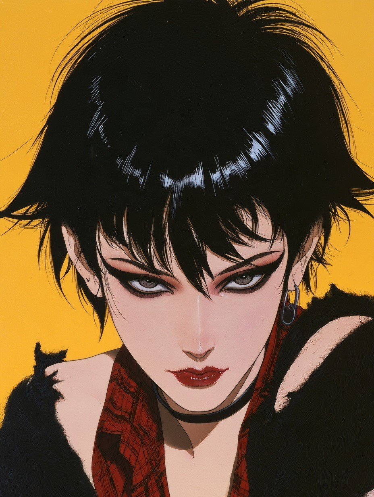
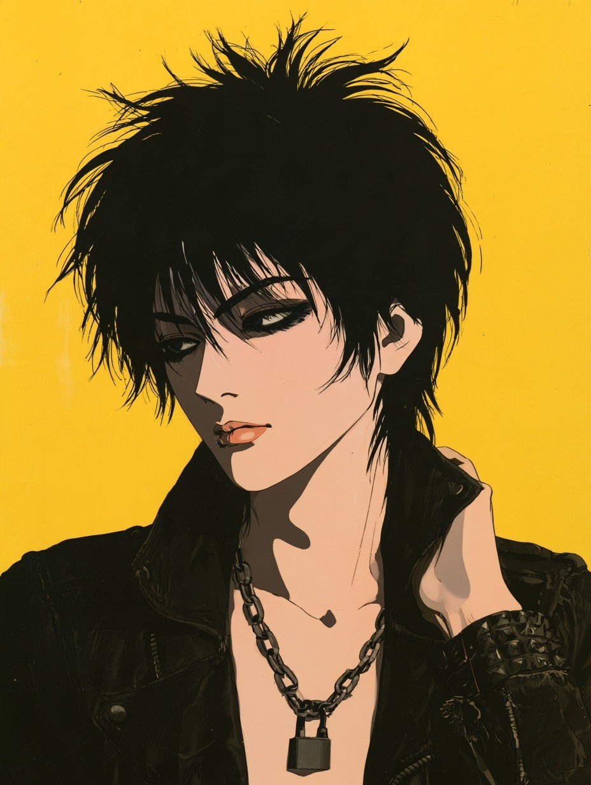
Contents
Two tribes,한 길
이번에는 8년 전의 런던이다. 1977년 여름, 첼시의 킹스로드에는 토요일마다 두 무리가 나타난다.
한 무리는 머리를 세우고, 옷을 찢어 옷핀으로 다시 잇는다. 펑크다. 다른 한 무리는 머리를 기름으로 올려 빗고 벨벳 깃의 긴 재킷을 입는다. 20여 년 전의 차림을 되살린 테디 보이다.
둘은 사이가 나쁘다. 그런데 옷에 들이는 정성은 똑같다. 이번 호는 두 무리를 한 권에 나란히 실었다. 가운데에는 펑크들이 잡지를 만드는 방식대로, 가위와 풀로 만든 지면을 끼웠다.
서로 싫어하는 두 무리가
같은 길에서 옷을 뽐낸다.
— ÉPOQUE 편집부, 1985년 서울
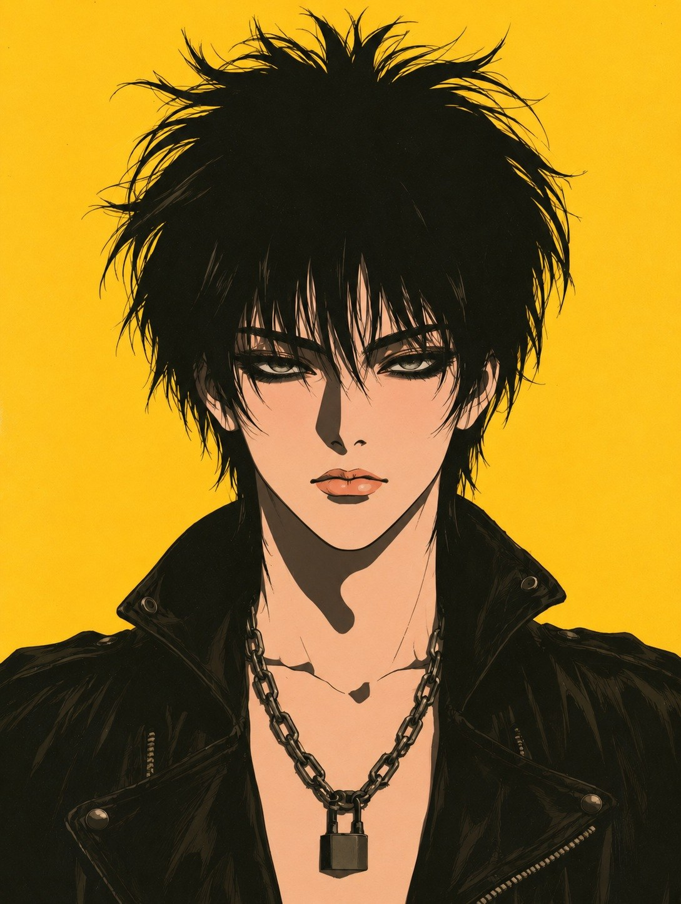
- HAIR
- 가위로 직접 자르고 세운다
- TOP
- 가죽 재킷, 찢은 티셔츠
- NECK
- 자물쇠를 건 체인
- SOUND
- 올해 나온 빠르고 짧은 노래
- SATURDAY
- 킹스로드
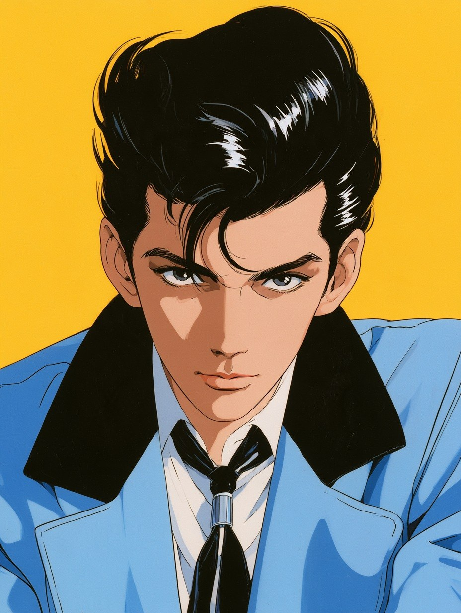
- HAIR
- 기름을 발라 올려 빗는다
- TOP
- 벨벳 깃의 긴 드레이프 재킷
- NECK
- 은 장식을 단 검은 타이
- SOUND
- 20여 년 전의 로큰롤
- SATURDAY
- 킹스로드
일곱 장면 — 무대에서 욕실 거울 앞까지
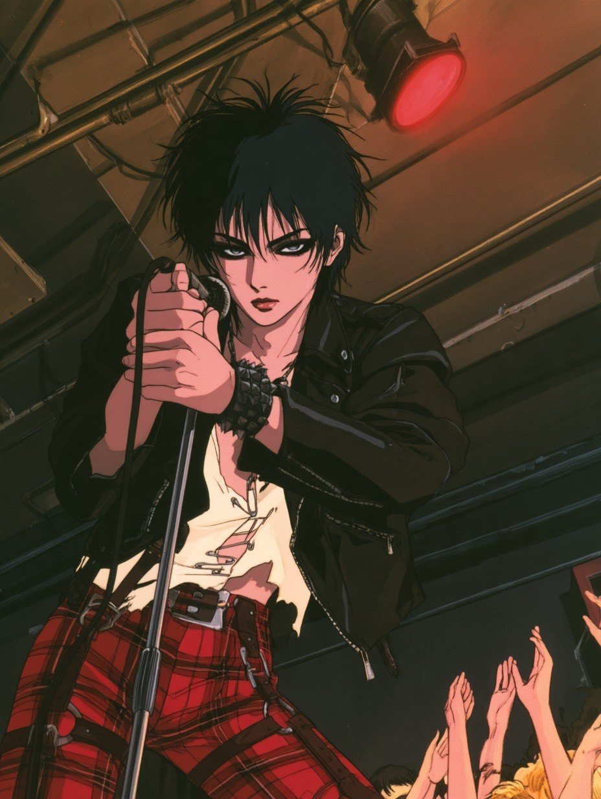
마이크 스탠드를 붙잡고
천장이 낮은 지하 클럽. 붉은 조명 하나가 무대를 비춘다. 그는 마이크 스탠드를 두 손으로 붙잡고 객석 쪽으로 몸을 기울인다. 아래에서 손들이 올라온다.
가죽 재킷 안의 흰 티셔츠는 가슴께가 찢어졌다. 바지는 붉은 타탄 체크이고, 양쪽 다리를 끈으로 이었다. 손목에는 징 박은 가죽 띠를 찼다.
- JACKET
- 검은 가죽 라이더 재킷
- TOP
- 찢어진 흰 티셔츠
- TROUSERS
- 끈을 단 붉은 타탄 바지
- WRIST
- 징 박은 가죽 손목 띠
베이스는 낮게 멘다
벽지가 벗겨진 연습실에 전구 하나가 매달려 있다. 그는 앰프에 한 발을 올리고 베이스를 허리 아래로 내려 멨다. 표지의 그 남자다.
가죽 재킷 안에는 아무것도 입지 않았다. 목에는 굵은 체인을 두르고 작은 자물쇠로 잠갔다. 허리에는 징 박은 벨트, 발에는 끈을 끝까지 맨 군화.
- JACKET
- 맨몸에 걸친 가죽 재킷
- NECK
- 자물쇠로 잠근 체인
- BELT
- 징 박은 검은 벨트
- BOOTS
- 검은 군화
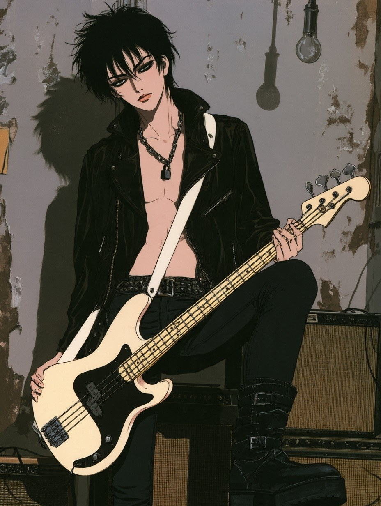
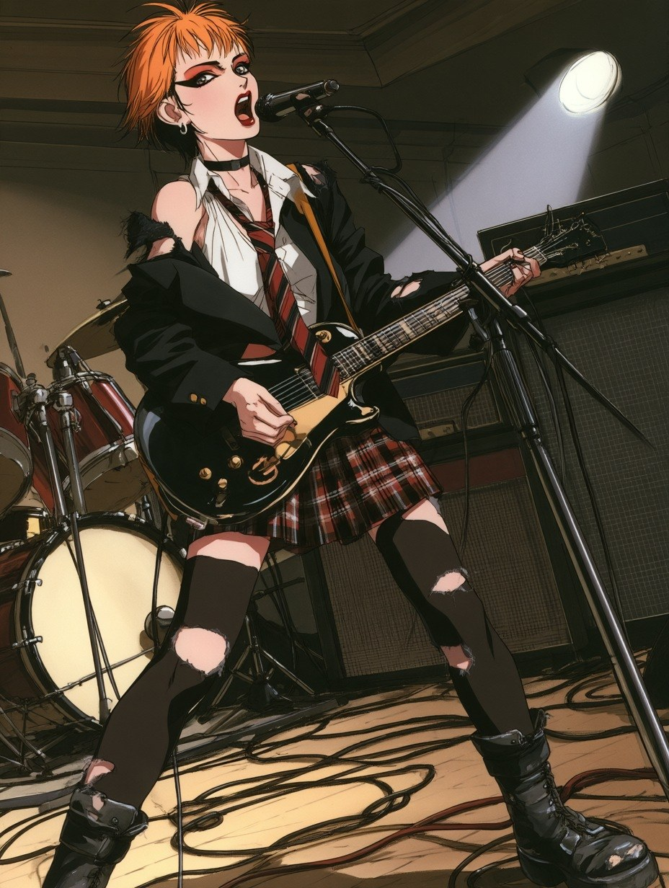
교복 타이를 매고 소리 지르다
펍 안쪽의 작은 무대. 조명 하나가 비스듬히 내려온다. 그녀는 다리를 벌리고 서서 기타를 치며 마이크에 대고 소리를 지른다. 바닥에는 전선이 뒤엉켜 있다.
남학생 교복 재킷을 어깨 밑으로 흘려 입고, 줄무늬 타이를 느슨하게 맸다. 아래는 타탄 치마와 무릎이 찢어진 검은 타이츠, 군화. 머리는 주황으로 염색했다.
- BLAZER
- 어깨 아래로 흘려 입은 검은 교복 재킷
- TIE
- 느슨한 줄무늬 타이
- SKIRT
- 타탄 미니스커트
- LEGS
- 찢어진 검은 타이츠, 군화
우유병 옆의 아침
검은 현관문 앞 계단에 그가 앉아 있다. 문 옆에는 배달된 우유병 두 개. 무릎에 기타를 눕히고 한 손으로 턱을 괴었다.
빨강과 검정 줄무늬의 모헤어 스웨터는 품이 크고 털이 길다. 바지는 다리에 붙는 검은색, 신발은 붉은 가죽 부츠다. 머리는 탈색해서 세웠다.
- SWEATER
- 빨강·검정 줄무늬 모헤어
- TROUSERS
- 다리에 붙는 검은 바지
- BOOTS
- 붉은 가죽 끈 부츠
- HAIR
- 탈색해서 세운 머리
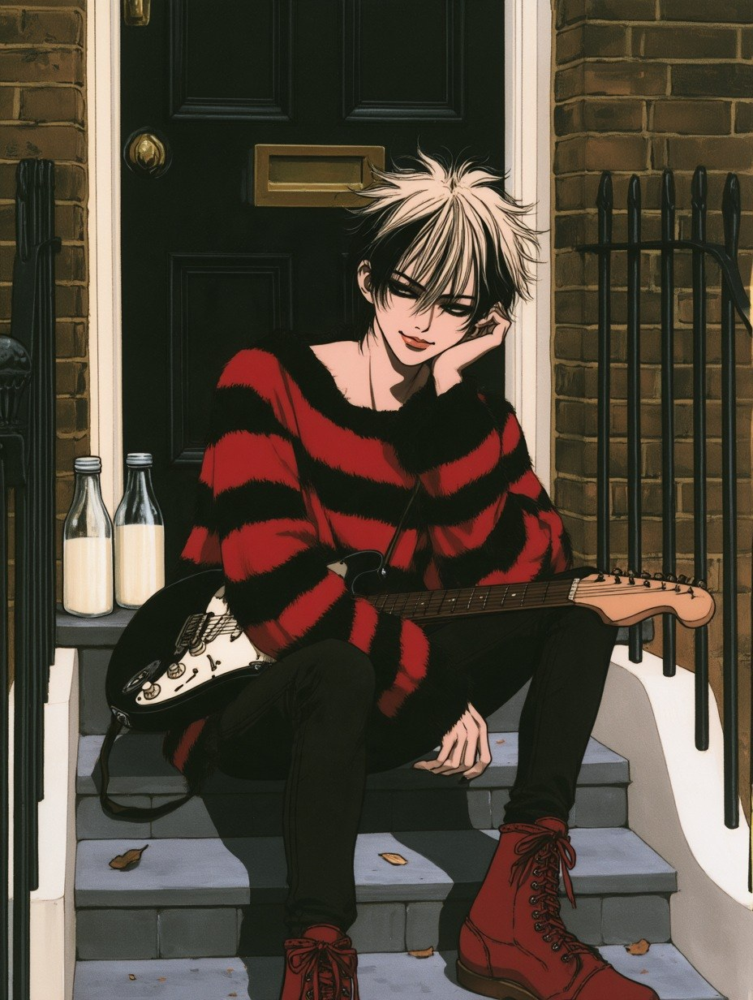
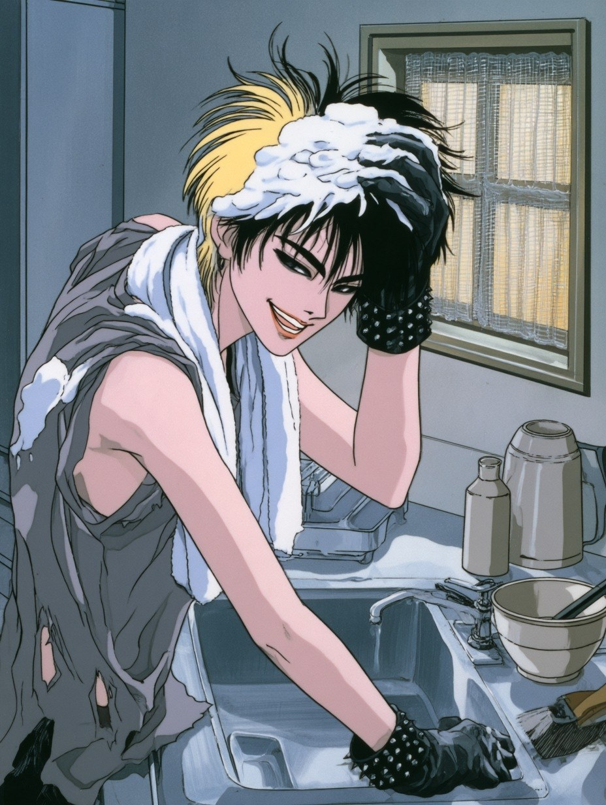
개수대에서 머리를 탈색하다
부엌 개수대 앞에서 그가 머리에 탈색약을 바른다. 어깨에는 수건을 걸쳤고 손에는 징 박은 검은 장갑을 꼈다. 반은 이미 노랗고 반은 아직 검다.
미용실에는 가지 않는다. 머리는 집에서, 직접 한다. 소매 없는 회색 티셔츠는 여기저기 뜯어졌다.
- HAIR
- 반쯤 탈색한 머리
- TOP
- 뜯어진 회색 민소매
- GLOVES
- 징 박은 검은 장갑
- TOOLS
- 수건, 그릇과 붓
아이라인은 굵게, 길게
금이 간 욕실 거울에 얼굴이 비친다. 전구 하나가 켜져 있다. 그녀는 연필로 눈꼬리를 관자놀이 쪽으로 길게 뺀다.
선은 굵고 끝은 뾰족하다. 입술은 붉게 칠했다. 짧은 머리는 핀 하나로 넘겼고 목에는 가는 초커를 둘렀다. 표지의 그 얼굴은 이렇게 만든다.
- EYES
- 굵고 길게 뺀 검은 아이라인
- LIPS
- 붉은 립스틱
- HAIR
- 핀으로 넘긴 짧은 머리
- NECK
- 검은 초커
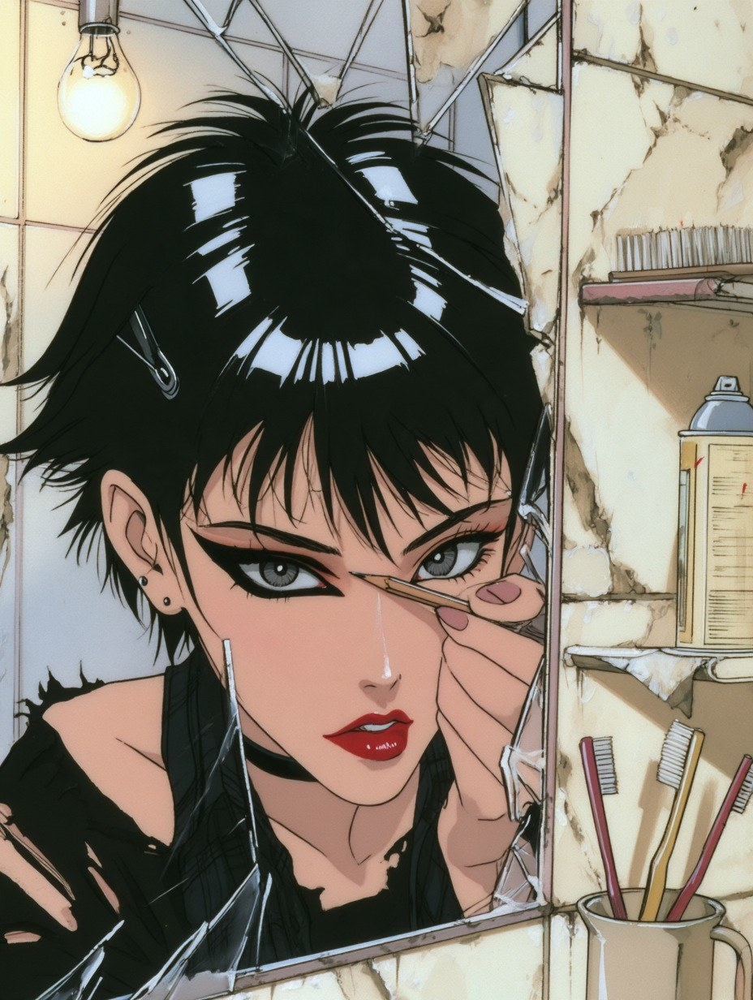
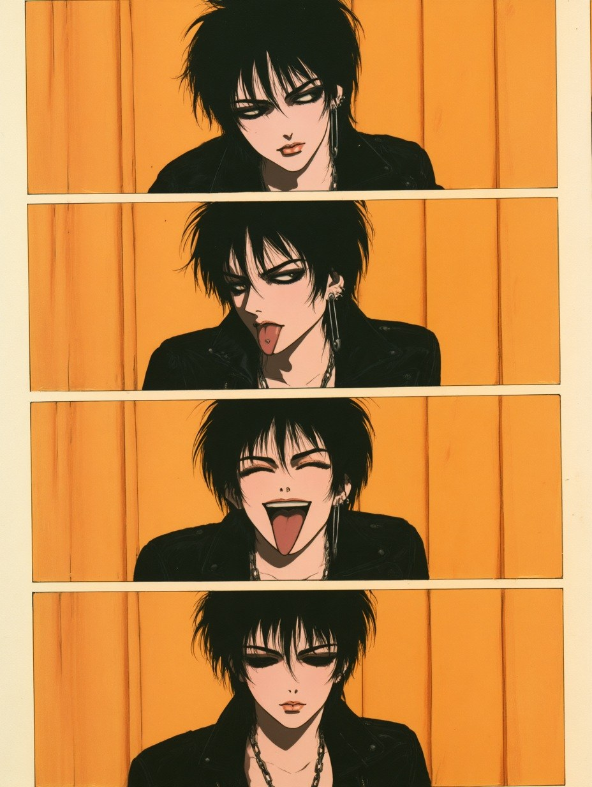
네 번의 플래시
동전을 넣으면 플래시가 네 번 터진다. 그는 한 번은 노려보고, 한 번은 혀를 내밀고, 한 번은 눈을 감고 웃고, 마지막에는 아무 표정도 짓지 않는다.
뒤의 주황 커튼은 네 칸 내내 그대로다. 달라지는 것은 얼굴뿐이다. 가죽 재킷과 체인 목걸이는 표지에서 본 그대로.
- FRAME 1
- 노려보기
- FRAME 2
- 혀 내밀기
- FRAME 3
- 눈 감고 웃기
- FRAME 4
- 무표정
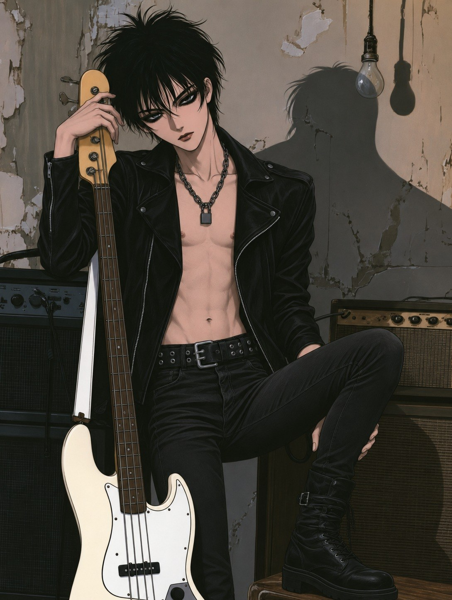
사진은 오려서 붙인다. 제목 글자는 신문에서 한 자씩 잘라 온다. 본문은 타자기로 친다. 삐뚤어져도 다시 붙이지 않는다.
환영
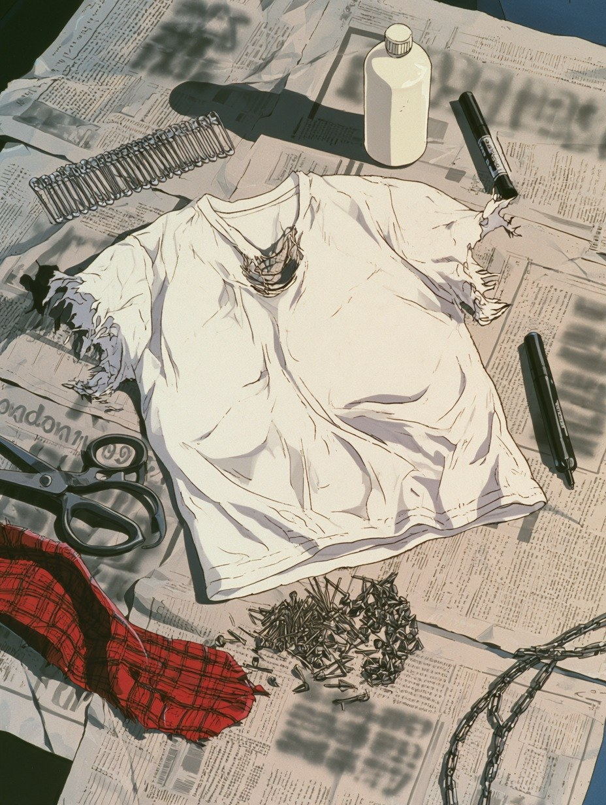
- 헌 흰 티셔츠를 신문지 위에 편다.
- 소매를 가위로 잘라 낸다. 끝은 다듬지 않는다.
- 목둘레를 손으로 찢는다.
- 찢은 자리를 옷핀으로 다시 잇는다.
- 매직으로 하고 싶은 말을 쓴다.
- 징과 체인은 마음대로.
조심
여덟 장면 — 2층 버스에서 골목 잔치까지
교복 재킷에 배지를 달고
빨간 2층 버스의 위층 맨 앞자리. 그는 앞 난간에 발을 올리고 비스듬히 앉았다. 큰 창에는 빗줄기가 흐르고, 아래로 검은 택시가 지나간다.
검은 교복 재킷 가슴에 둥근 배지를 여러 개 달았다. 줄무늬 넥타이는 매듭을 가슴까지 내렸고, 셔츠 깃은 세웠다.
- BLAZER
- 검은 교복 재킷
- BADGES
- 가슴에 단 둥근 배지 여러 개
- TIE
- 느슨하게 내린 줄무늬 타이
- SHIRT
- 깃을 세운 흰 셔츠
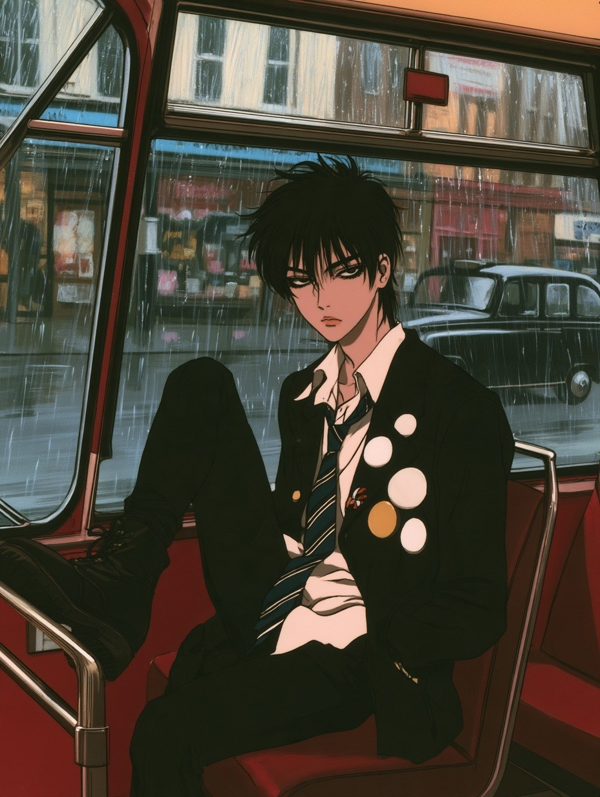
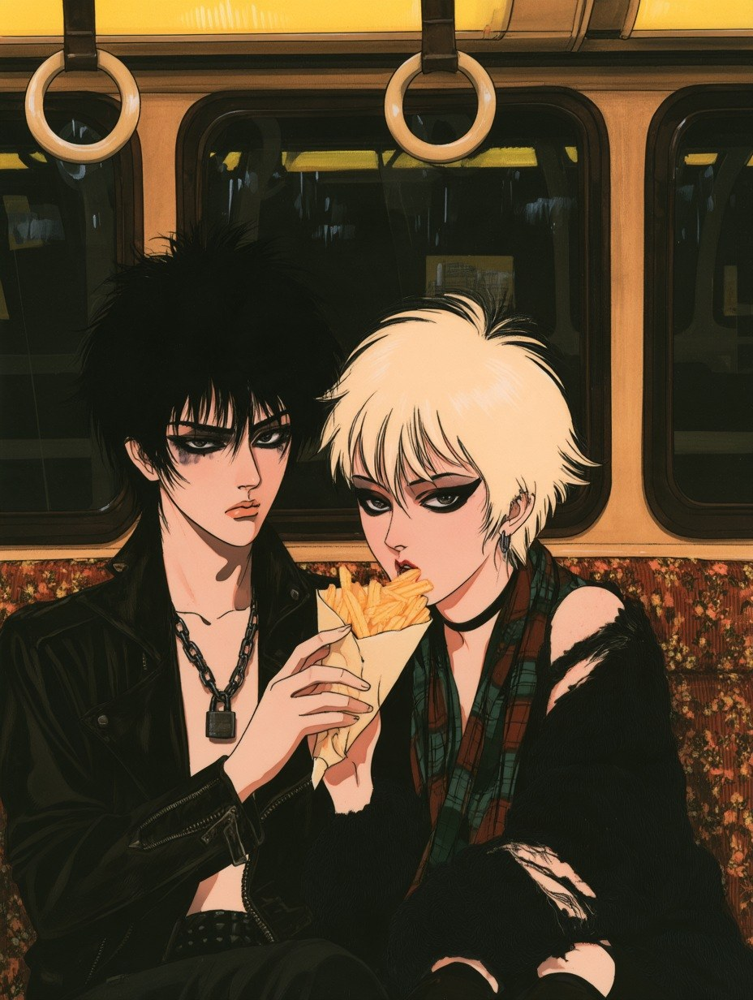
감자튀김 한 봉지를 둘이서
지하철 긴 의자에 둘이 붙어 앉았다. 머리 위로 둥근 손잡이가 흔들린다. 종이 봉지에 든 감자튀김 하나를 나눠 먹는다. 표정은 둘 다 심드렁하다.
남자는 가죽 재킷에 자물쇠 목걸이. 여자는 하얗게 탈색한 머리에 뜯어진 모헤어 스웨터를 입고 타탄 목도리를 둘렀다.
- HIM
- 가죽 재킷, 자물쇠 체인
- HER
- 뜯어진 모헤어 스웨터, 타탄 목도리
- HAIR
- 검은 머리와 탈색한 머리
- SNACK
- 종이 봉지에 든 감자튀김
세탁기 위에서 읽는 팬진
빨래가 도는 동안 그녀는 세탁기 위에 올라앉아 팬진을 읽는다. 복사기로 찍어 묶은 얇은 잡지다. 표지의 그 여자다.
검은 모헤어 스웨터는 어깨와 소매가 뜯어졌다. 아래는 붉은 타탄 치마와 검은 타이츠, 군화. 목에는 가는 초커를 둘렀다.
- SWEATER
- 뜯어진 검은 모헤어
- SKIRT
- 붉은 타탄 미니 킬트
- LEGS
- 검은 타이츠, 검은 군화
- NECK
- 가는 검은 초커
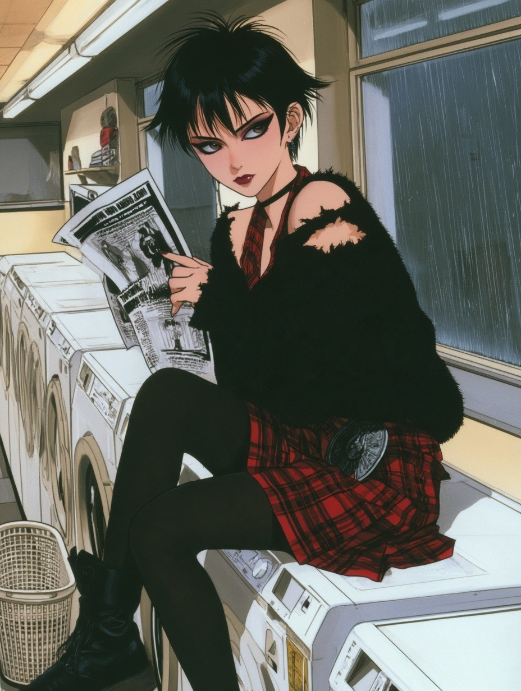
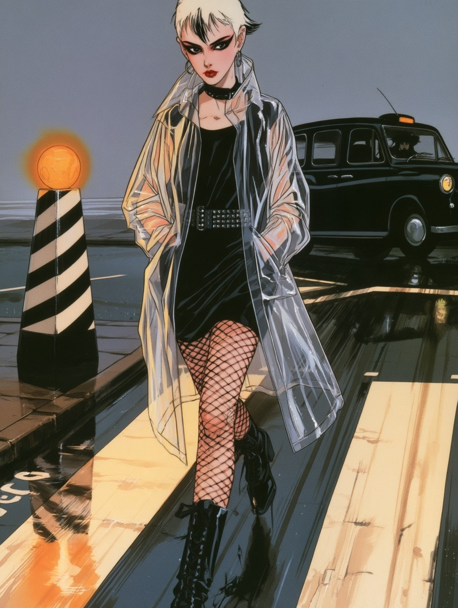
비닐 한 장을 걸치고
젖은 횡단보도를 그녀가 건넌다. 길가에는 줄무늬 기둥 위에서 주황 등이 빛나고, 검은 택시가 멈춰 서 있다.
속이 다 비치는 비닐 레인코트 안에 검은 미니 드레스를 입었다. 다리는 망사 스타킹, 허리는 징 박은 벨트. 머리는 하얗게 탈색해 짧게 쳤다.
- COAT
- 투명 비닐 레인코트
- DRESS
- 검은 미니 드레스
- LEGS
- 망사 스타킹, 끈 부츠
- HAIR
- 탈색한 짧은 머리
비닐봉지로 만든 드레스
찢어진 포스터가 겹겹이 붙은 벽 앞에 그녀가 선다. 플래시 불빛에 그림자가 벽에 또렷하게 떨어진다.
드레스는 검은 쓰레기 봉지다. 구멍을 내어 뒤집어쓰고 허리를 체인으로 묶었다. 팔에는 찢어진 망사 장갑, 목에는 징 박은 목걸이. 눈가에는 검은 세모를 그렸다.
- DRESS
- 검은 비닐봉지 드레스
- BELT
- 허리에 두른 체인
- GLOVES
- 찢어진 망사 장갑
- EYES
- 세모로 그린 검은 눈 화장
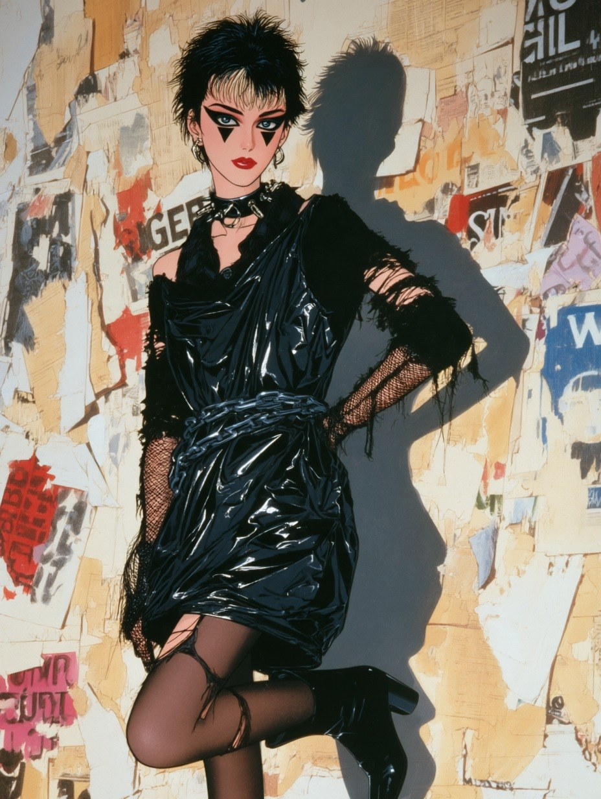
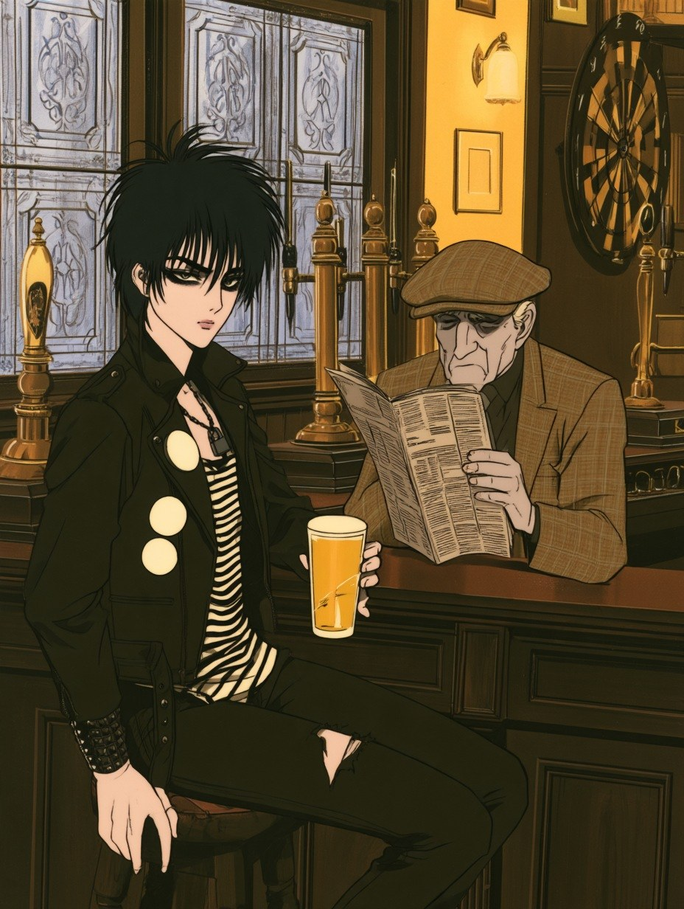
옆자리의 납작모자
놋쇠 맥주 꼭지가 늘어선 나무 카운터. 그는 맥주 한 잔을 들고 걸상에서 몸을 돌린다. 옆자리의 노인은 납작모자를 쓰고 신문을 읽는다. 서로 쳐다보지 않는다.
재킷에는 둥근 배지를 달았고 안에는 줄무늬 티셔츠를 입었다. 손목에는 징 박은 띠. 벽에는 다트판이 걸려 있다.
- JACKET
- 배지를 단 검은 재킷
- TOP
- 줄무늬 티셔츠
- WRIST
- 징 박은 손목 띠
- NEIGHBOUR
- 납작모자와 트위드 재킷의 노인
솜사탕과 군화
흐린 바닷가 부두에 줄무늬 접이식 의자가 늘어서 있다. 대부분 비었다. 그녀는 그중 하나에 깊숙이 누워 분홍 솜사탕을 먹는다. 멀리 회전목마가 보인다.
징 박은 가죽 재킷, 줄무늬 티셔츠, 끈 달린 타탄 바지. 군화 신은 발을 앞으로 쭉 뻗었다. 휴양지에 와서도 옷은 갈아입지 않았다.
- JACKET
- 징 박은 가죽 재킷
- TOP
- 줄무늬 티셔츠
- TROUSERS
- 끈 달린 타탄 바지
- IN HAND
- 분홍 솜사탕
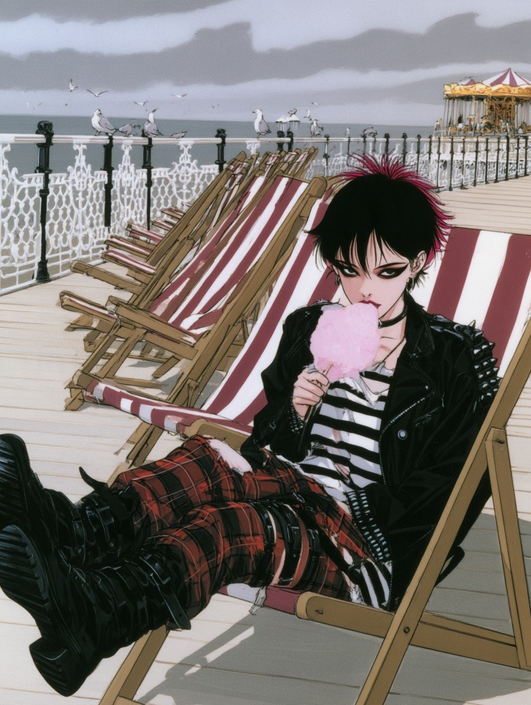
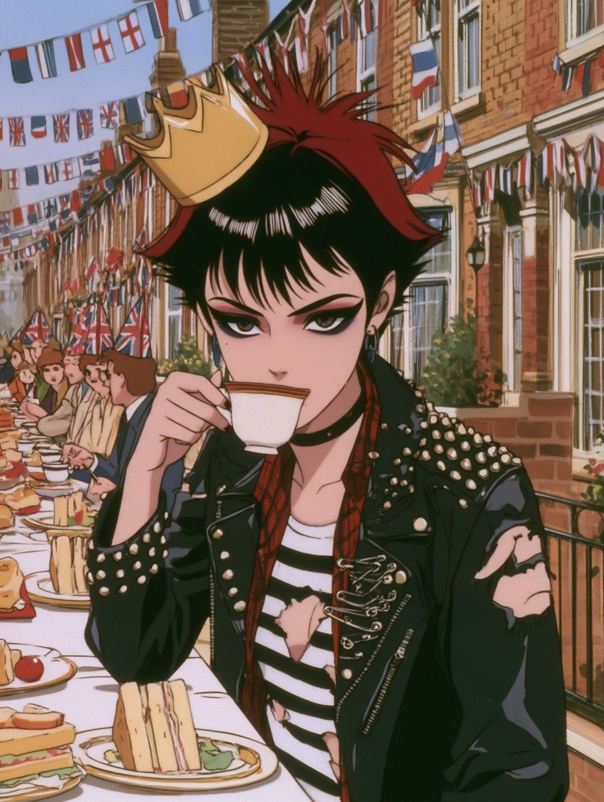
종이 왕관과 가죽 재킷
1977년 6월은 여왕 즉위 25주년 행사가 열린 달이다. 이 골목도 집과 집 사이에 깃발을 줄줄이 걸고, 긴 식탁에 샌드위치와 케이크를 차렸다.
그 식탁 끝에 그녀가 앉아 있다. 붉게 염색한 머리에 금색 종이 왕관을 비뚜름히 얹고, 새끼손가락을 세운 채 차를 마신다. 징을 가득 박은 가죽 재킷에는 옷핀이 달려 있다.
- JACKET
- 징을 박은 검은 가죽 재킷
- TOP
- 찢어진 줄무늬 티셔츠
- HEAD
- 금색 종이 왕관
- DETAIL
- 옷깃의 옷핀
1977
킹스로드는 첼시를 가로지르는 긴 길이다. 1977년 봄부터 이 길에 펑크 옷을 파는 가게들이 들어섰고, 토요일이면 서로의 옷을 구경하러 온 사람들로 찼다.
그해 여름에는 되살아난 테디 보이들도 이 길로 왔다. 8월 초의 통신 기사는 토요일마다 두 무리 사이에 충돌이 벌어진다고 전했다.
그 길에서는
- 1955메리 퀀트가 킹스로드에 가게 「바자」를 엶
- 1977.3킹스로드 130번지에 가게 「BOY」가 들어섬
- 1977.6여왕 즉위 25주년 행사
- 1977.8.6통신 보도: 토요일마다 펑크와 테디 보이 충돌
세 장면 — 이발소 의자에서 자동차 보닛까지
머리는 이발사에게 맡긴다
전구를 두른 거울 앞, 가죽 이발 의자에 그가 앉았다. 이발사의 손이 빗으로 앞머리를 세운다. 창밖으로 줄무늬 이발소 표시등이 보인다.
흰 보자기 위로 얼굴만 나와 있다. 하늘색 재킷은 벽에 걸어 두었다. 펑크는 개수대에서 제 손으로 머리를 하고, 테드는 이발소 의자에 앉는다.
- HAIR
- 빗으로 세워 올리는 앞머리
- ON THE HOOK
- 벨벳 깃의 하늘색 재킷
- CHAIR
- 가죽 이발 의자
- TOOLS
- 빗, 가위, 유리병
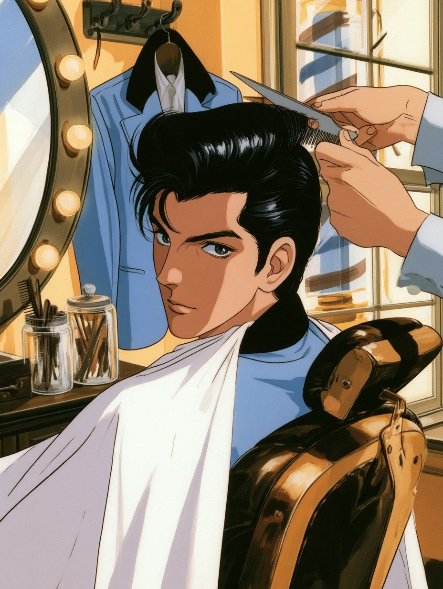
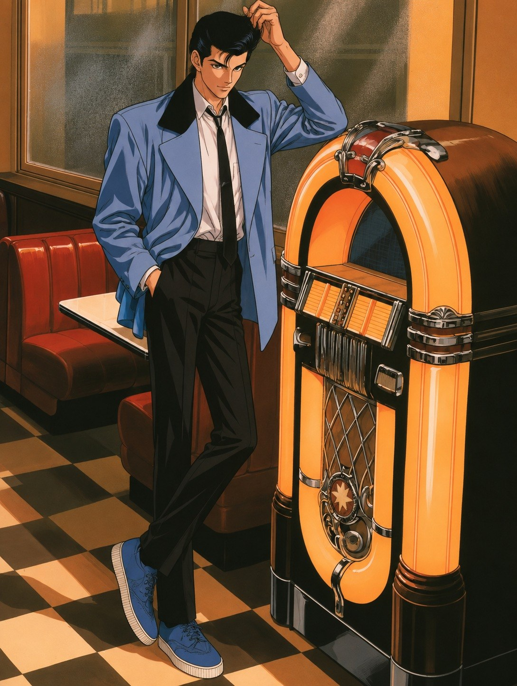
주크박스 앞에서 머리를 만지다
바둑판 바닥의 작은 카페. 주황색으로 빛나는 주크박스에 그가 팔꿈치를 올리고, 한 손으로 머리를 다듬는다.
하늘색 드레이프 재킷은 길이가 길고 깃에 검은 벨벳을 댔다. 가는 검은 타이, 통 좁은 검은 바지. 신발은 파란 스웨이드에 밑창이 두껍다. 20여 년 전의 차림을 그대로 되살렸다.
- JACKET
- 벨벳 깃을 단 하늘색 드레이프 재킷
- TIE
- 가는 검은 타이
- TROUSERS
- 통 좁은 검은 바지
- SHOES
- 밑창 두꺼운 파란 스웨이드
분홍 양말이 보이게
포스터가 겹겹이 붙은 벽돌 벽 앞, 크림색 낡은 승용차 보닛에 그가 걸터앉았다. 모퉁이에는 빨간 우체통이 서 있다. 그는 타이 매듭을 고쳐 맨다.
한쪽 발을 범퍼에 올려서 분홍 양말이 드러난다. 파란 스웨이드 구두 위로 한 뼘쯤 보이는 색이다. 재킷부터 양말까지 어느 하나 대충 고른 것이 없다.
- JACKET
- 하늘색 드레이프 재킷
- TIE
- 검은 타이
- SOCKS
- 분홍 양말
- SHOES
- 파란 스웨이드 구두
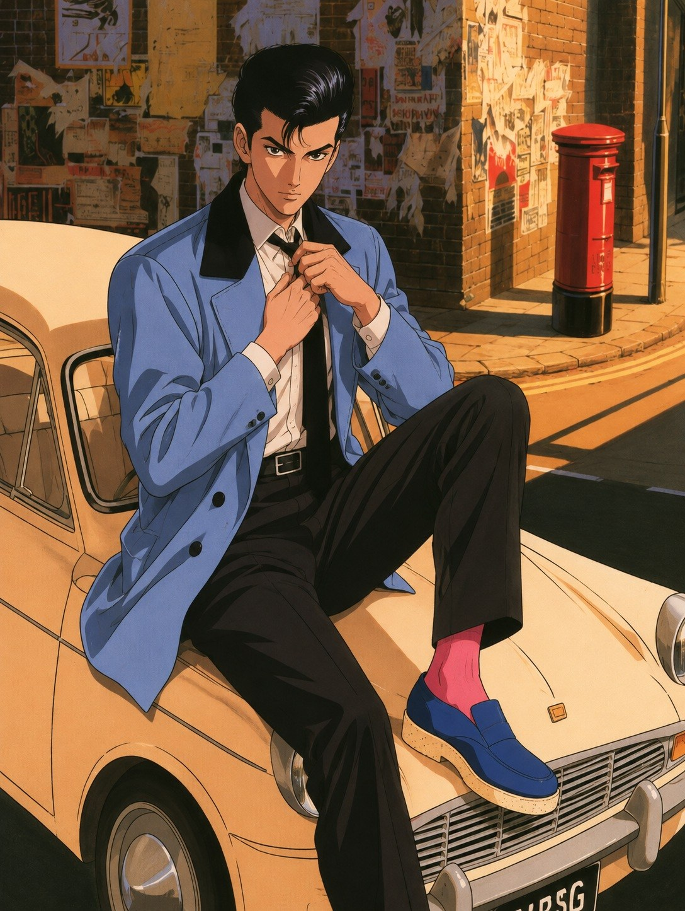
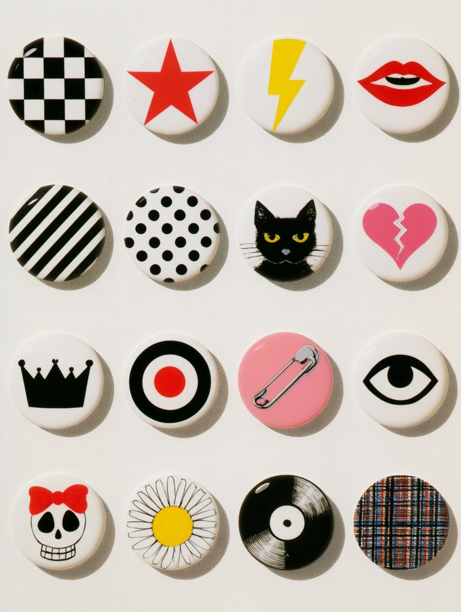
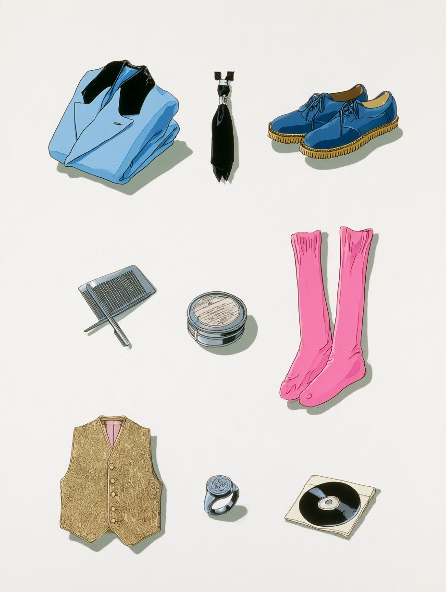
세 장면 — 마주 선 두 사람에서 꽃 좌판까지
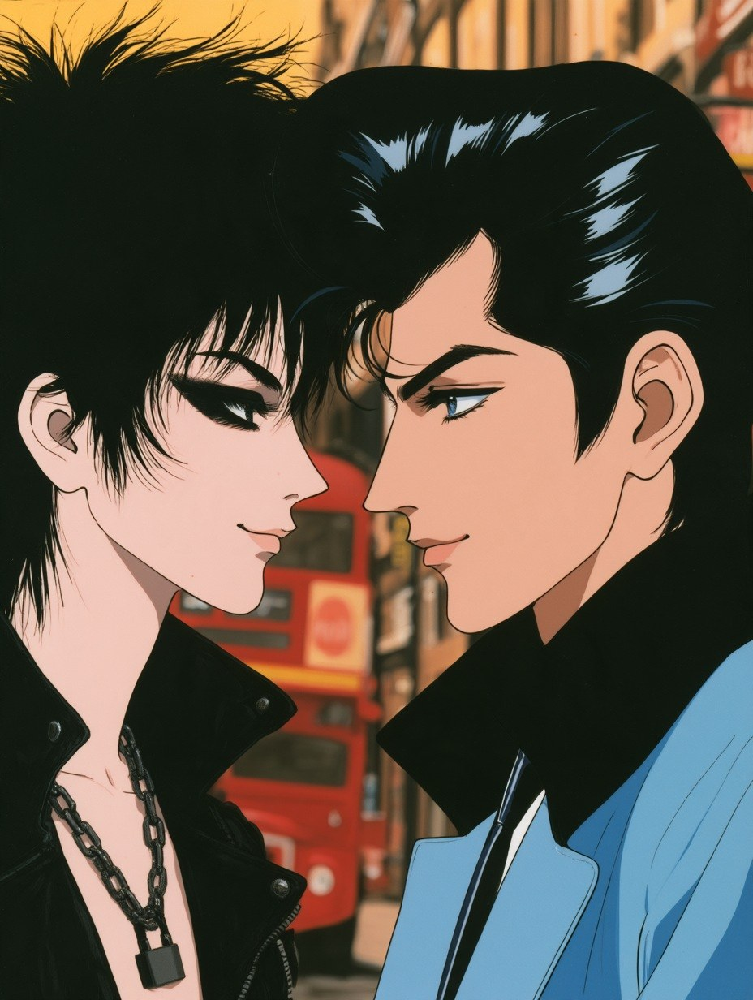
코앞에서 마주 보다
토요일 오후의 킹스로드. 삐죽한 머리와 올려 빗은 머리가 코앞에서 마주 섰다. 뒤로 빨간 버스가 지나간다.
한쪽은 가죽 재킷에 자물쇠 목걸이, 한쪽은 벨벳 깃의 하늘색 재킷. 1977년 여름 이 길에서는 두 무리가 주말마다 부딪쳤다. 이 둘은 웃고 있다.
- LEFT
- 펑크 — 가죽 재킷, 자물쇠 체인
- RIGHT
- 테드 — 벨벳 깃 드레이프 재킷
- HAIR
- 세운 머리와 올려 빗은 머리
- PLACE
- 킹스로드
불 켜진 진열창
비가 오는 저녁, 벽돌 건물 1층마다 옷가게 진열창에 불이 켜졌다. 빨간 2층 버스와 검은 택시가 젖은 길을 지나간다.
진열창 앞을 삐죽한 머리의 무리가 걸어간다. 킹스로드에는 지하철역이 슬론 스퀘어 하나뿐이라, 여기까지 오려면 작정하고 와야 한다.
- STREET
- 벽돌 건물과 굴뚝
- WINDOWS
- 옷가게 진열창
- TRAFFIC
- 빨간 2층 버스, 검은 택시
- PASSERS-BY
- 삐죽한 머리의 무리
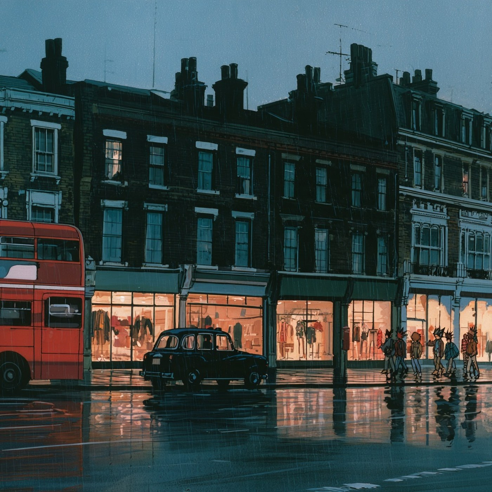
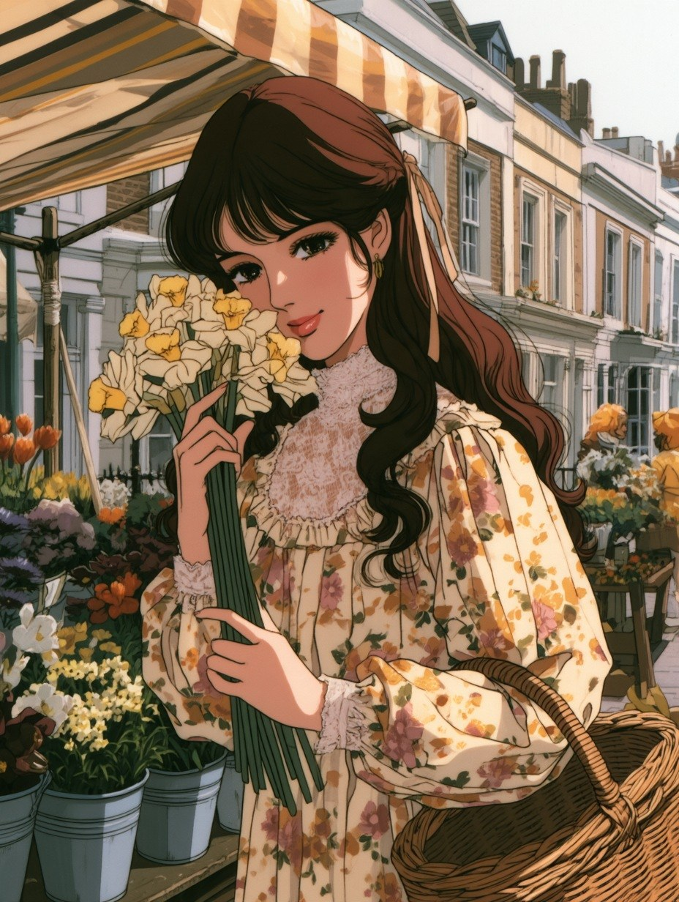
같은 해, 다른 옷
같은 1977년의 런던에 이런 옷도 있다. 줄무늬 차양 아래 꽃 양동이가 늘어선 시장 좌판에서 그녀가 수선화 한 다발을 고른다.
목까지 올라오는 레이스 깃에 부푼 소매, 잔 꽃무늬의 긴 면 드레스. 긴 웨이브 머리는 리본으로 묶었다. 팔에는 버들 바구니를 걸었다.
- DRESS
- 꽃무늬 긴 면 드레스
- COLLAR
- 목까지 올라오는 레이스 깃
- HAIR
- 리본으로 묶은 긴 웨이브
- BASKET
- 버들 바구니
네 장면 — 발전소 굴뚝에서 부엌 식탁까지
굴뚝 네 개
템스강 건너에 벽돌 발전소가 서 있다. 흰 굴뚝 네 개에서 연기가 가늘게 오른다. 강에는 배가 떠 있고, 다리 위로 빨간 버스가 지나간다.
앞쪽에는 연립주택 굴뚝이 줄지어 있다. 하늘은 분홍과 회색이다.
- SKYLINE
- 흰 굴뚝 네 개의 벽돌 발전소
- RIVER
- 배와 기중기
- BRIDGE
- 빨간 2층 버스
- FOREGROUND
- 연립주택의 굴뚝
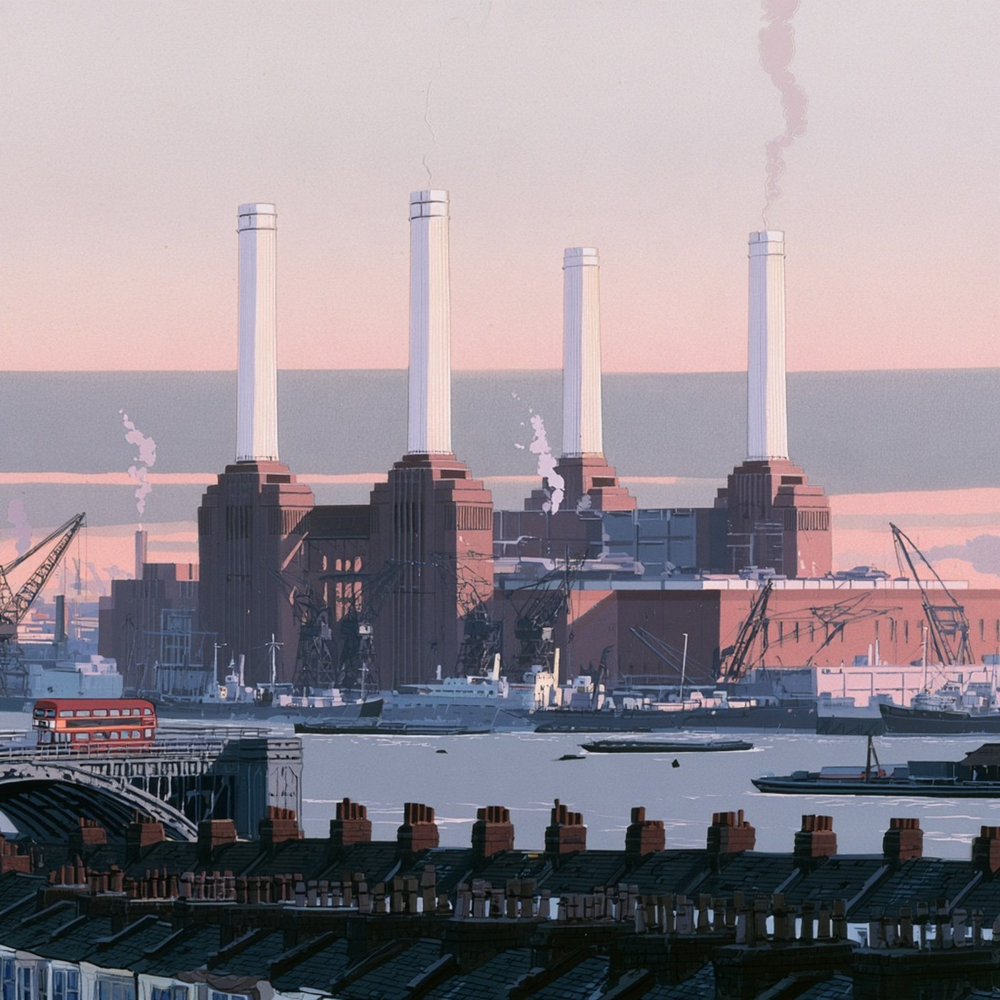
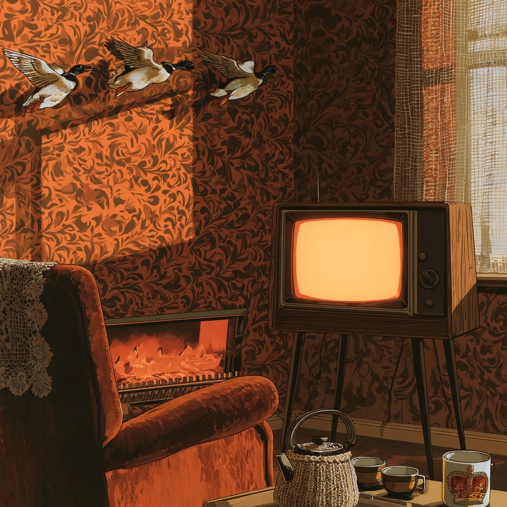
주황 벽지와 날아가는 오리
주황과 갈색 소용돌이무늬 벽지. 벽에는 도자기 오리 세 마리가 줄지어 날아간다. 다리 달린 나무 텔레비전 옆에서 전기난로가 빨갛게 달아 있다.
탁자에는 털실 덮개를 씌운 찻주전자와 찻잔, 왕관을 그린 기념 머그잔이 놓였다. 가죽 재킷을 입은 아이들이 문을 닫고 나온 거실이다.
- WALL
- 소용돌이무늬 벽지, 도자기 오리 세 마리
- TV
- 다리 달린 나무 텔레비전
- HEAT
- 전기난로
- TABLE
- 털실 덮개의 찻주전자, 기념 머그잔
신문지에 싼 저녁
비에 젖은 초록 벤치 위에 신문지 봉지가 펼쳐져 있다. 튀긴 생선 한 토막과 굵은 감자튀김, 나무 포크.
옆에는 식초병과 소금통, 음료수 캔 하나. 구겨진 종이 냅킨이 굴러다닌다.
- MAIN
- 튀긴 생선과 굵은 감자튀김
- WRAP
- 신문지 봉지
- ON THE SIDE
- 식초, 소금
- DRINK
- 캔 음료
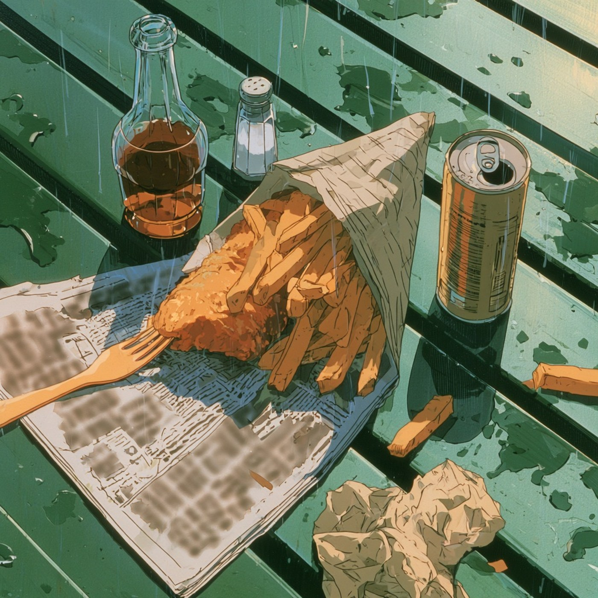
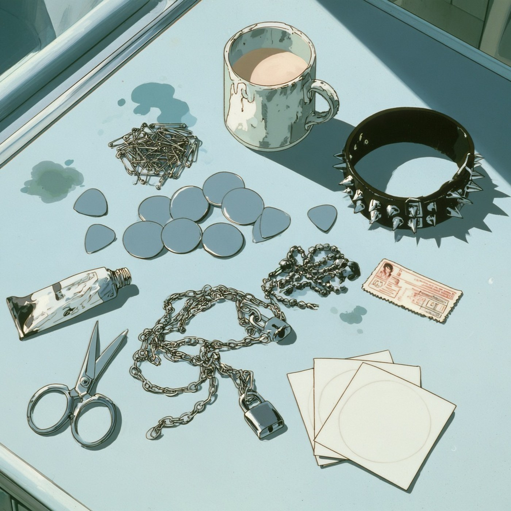
식탁 위의 펑크
하늘색 식탁 위에 밀크티 한 잔. 그 옆에 펑크의 살림이 펼쳐져 있다.
옷핀 한 무더기, 기타 피크, 징 박은 가죽 띠, 자물쇠를 단 체인, 가위, 염색약 튜브, 버스표. 대부분 집에 있거나 철물점에서 살 수 있는 것들이다.
- DRINK
- 밀크티 한 잔
- METAL
- 옷핀, 체인과 자물쇠, 가위
- LEATHER
- 징 박은 가죽 띠
- OTHERS
- 기타 피크, 염색약, 버스표
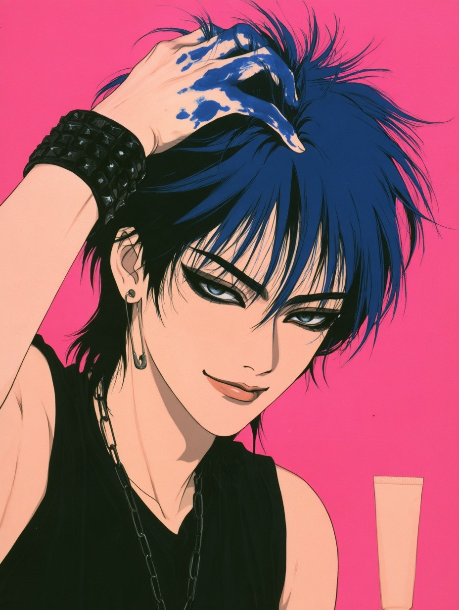
머리에 바르는 파랑.
20분이면 다른 사람.
The Wardrobe
- Issue
- No.07 · 런던 특파호
June 1977, printed in Seoul 1985 - Locations
- 지하 클럽 · 연습실 · 펍 · 2층 버스 · 지하철 · 빨래방 · 바닷가 부두 · 이발소 · 카페 · 킹스로드 · 시장
- Layout
- 두 쪽을 펼친 잡지 지면. 한 자씩 오려 붙인 제호, 타자기 글씨, 타탄 체크
- Special pages
- 팬진 지면, 배지와 옷장 카탈로그, 광고 속 상품은 모두 지어낸 것
- Produced by
- Concept, Styling & Art Direction — KIM SOY
Illustrations — AI 생성 이미지
ÉPOQUE의 시간 여행은 다음 호에 계속됩니다.